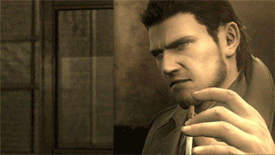

First post in the blog
website development, hosting, this and thatWelcome to the very first entry in my blog, I've been planning on making a webpage and finding a way of securely hosting it. So this is sorta the braindump talking about my experiences, trobules, and overall learning in the process so far.
This is the second page that ive made when it comes to my website, and I wanted to branch out to using a different design compared to the first page, the homepage,
this one I tried to go for more of a web2 vibe that I remember from my childhood. So it was a good re-learning in good ol blocky design and css gruntwork that I did
back in my webdev class in my junior year of college two years ago now (man I feel old).

Enough rambling.
This has been a really enjoyable project so far, I've totally learned how much I "Love" css. But I know that boradning my skills in general is a great overall
practice.
The biggest struggle so in the creation of this blog page blog section? was the Recent Track section to the left. That section there took like two days of
troubleshooting, asking questions, and testing. Due to the fact that at the time of this blogpost being written the webpage isn't yet there was issues regarding CORS
which was leading to no info being sent to me after my constructed get request. I figure ill be able to remove it once it goes live, but for now Ill enjoy the blissful
workaround that I found here.